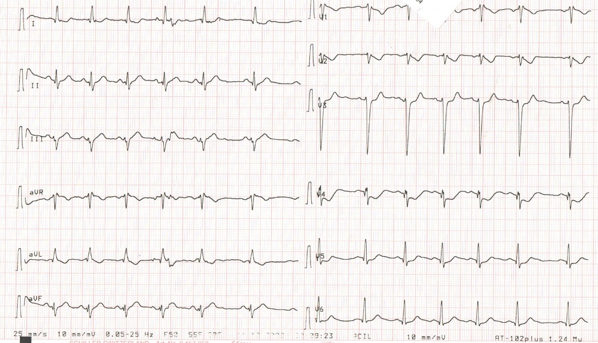
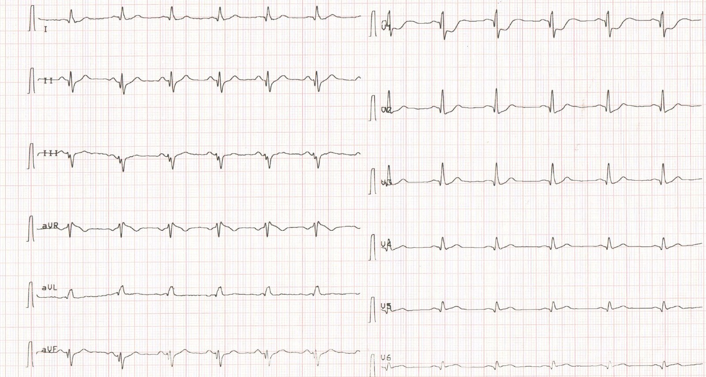
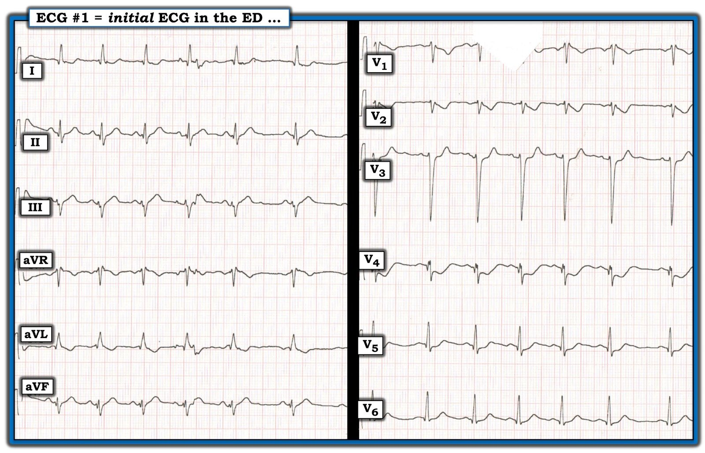

18/12/2022 — Bệnh nhân trẻ đau ngực giảm dần với điện tâm đồ kín đáo nhưng có giá trị chẩn đoán
Bản dịch tiếng Việt của bài "A young patient with diminishing pain with a subtle but diagnostic ECG." – Dr. Smith’s ECG Blog. Giữ nguyên toàn bộ 4 hình ảnh và 2 video của bản gốc.
Tác giả: Emre Aslanger
(Emre là biên tập viên mới nhất của chúng tôi. Anh là bác sĩ can thiệp tại Thổ Nhĩ Kỳ và là một trong 3 người khởi xướng mô hình OMI/NOMI, cùng với Pendell và Smith. Đây là các công trình đã công bố của anh ấy.)
Ca bệnh
Một bệnh nhân nam 39 tuổi, không có tiền sử bệnh lý, đến viện vì đau ngực bắt đầu 2 giờ trước khi nhập viện. Anh cho biết cường độ đau là 10/10 khi ở nhà nhưng hiện chỉ còn khoảng 4/10. Khám lâm sàng không có gì đặc biệt. Anh không có yếu tố nguy cơ tim mạch nào ngoại trừ hút thuốc lá 10 gói-năm. Anh phủ nhận sử dụng chất cấm. Điện tâm đồ của anh được trình bày dưới đây.
Bạn nghĩ gì?


Tuy không nổi bật, đây rõ ràng là một điện tâm đồ có giá trị chẩn đoán nhồi máu cơ tim dưới-“sau” do tắc động mạch vành (OMI), nhiều khả năng nhất là do tắc động mạch mũ trái (LCx). Có ST chênh xuống rõ ở V2-5, đạt tối đa quanh V4. Hình thái ở V2 đặc biệt đáng lo ngại vì là thay đổi soi gương (reciprocal) của ST chênh lên (STE) “phía sau”. Cũng có ST chênh lên kín đáo ở các chuyển đạo dưới, với sóng T tối cấp và sóng Q đi kèm ở chuyển đạo II và aVF. Chuyển đạo III có phức bộ QRS phân mảnh. Tất cả những dấu hiệu này rất khó gặp ở một người đàn ông 39 tuổi không có tiền sử bệnh tim.
Bác sĩ cấp cứu nghi ngờ chẩn đoán và muốn xem một điện tâm đồ khác có chuyển đạo phía sau. Điện tâm đồ đó được trình bày dưới đây. Bệnh nhân rất ổn định và cho biết cơn đau hiện chỉ còn khoảng 2/10. Bạn sẽ làm gì?


Các chuyển đạo V4-6 ở đây thực ra là V7-9. Một thói quen tốt là ghi chú điều này lên giấy ngay khi in bản ghi ra. Về sau, không ai có thể đoán chắc các chuyển đạo này thực ra là gì. Một đề xuất khác là giữ nguyên V1-3 tại chỗ (ở đây có vẻ V1-3 thực ra là V4-6), vì chúng cho thấy mức ST chênh xuống lớn nhất và việc giữ chúng trên điện tâm đồ mới có thể giúp đảm bảo rằng ST chênh xuống (STD) ở các chuyển đạo này chưa biến mất. Nếu ST chênh xuống đã hết vào thời điểm ghi điện tâm đồ phía sau, đó có thể là một lý do khác khiến điện tâm đồ này âm tính giả.
Ở đây có ST chênh lên ở chuyển đạo V8 và V9. Mức chênh có thể dưới 1 mm, nhưng ngay cả trong Định nghĩa toàn cầu lần thứ tư về nhồi máu cơ tim, tiêu chuẩn cũng được xác định là ST chênh lên ít nhất 0.5 mm. Tuy nhiên, chúng tôi có xu hướng đánh giá bằng mắt, và ST chênh lên rõ ràng là có.
Mặc dù lâm sàng ổn định và cơn đau giảm dần, bệnh nhân này cần chụp mạch vành ngay lập tức. Đau ngực có thể giảm do nhiều yếu tố ngay cả khi động mạch vẫn còn tắc. Cá nhân tôi tin rằng trong số đau ngực, điện tâm đồ và troponin, yếu tố đáng tin cậy nhất là điện tâm đồ.
Một điểm then chốt (pearl) quan trọng khác là: Đừng cho rằng một điện tâm đồ kín đáo nghĩa là một nhồi máu cơ tim nhẹ.
Bệnh nhân được cho uống 300 mg acid acetylsalicylic, 180 mg ticagrelor và được đưa đến phòng thông tim (cath lab).
Đây là hình chụp mạch vành của bệnh nhân:
Hình chụp này cho thấy động mạch mũ trái (LCx) bị tắc ngay tại lỗ xuất phát (ostium). Chỗ tắc nằm chỉ cách đầu ống thông vài milimét.
So sánh với giải phẫu sau khi đặt stent:
Nhánh nằm thấp hơn trong 2 nhánh giờ đã thấy rõ là động mạch mũ, hiện có dòng chảy rất tốt.
Bệnh nhân hồi phục tốt. Troponin đỉnh trên 5000 ng/L. Siêu âm tim ngày hôm sau cho thấy giảm động thành dưới-bên với EF %45-50.
Nếu bạn chưa đọc, tôi thực sự khuyên bạn đọc bài báo sau về chẩn đoán nhồi máu cơ tim “phía sau”: Ischemic ST-Segment Depression Maximal in V1-V4 (Versus V5-V6) of Any Amplitude Is Specific for Occlusion Myocardial Infarction (Versus Nonocclusive Ischemia), của Meyers HP và cs.
Đây là đường link:
https://pubmed.ncbi.nlm.nih.gov/34775811/ (bài báo trên PubMed)
Lưu ý rằng động mạch vẫn còn tắc, không thấy tuần hoàn bàng hệ (trên các hình khác), nhưng cơn đau đã giảm. Hãy luôn nhớ rằng triệu chứng đau không đáng tin cậy lắm nếu điện tâm đồ đã rõ ràng.
Một lưu ý nhỏ về “nhồi máu cơ tim phía sau”:
Có thể bạn đã gặp cuộc tranh luận về cách gọi tên nhồi máu cơ tim “phía sau”. Trong y văn mới hơn, nó thường được gọi là nhồi máu cơ tim “thành bên”, nhưng tên gọi nhồi máu cơ tim “phía sau” vẫn còn được dùng rộng rãi.
Điều này dường như bắt nguồn từ việc dùng lẫn lộn các hệ quy chiếu khác nhau: một hệ dựa trên các phân vùng cơ tim, hệ còn lại dựa trên vị trí các chuyển đạo trên thành ngực.
Đồng thuận hiện nay do Hội Tim mạch Hoa Kỳ đề xuất chia thất trái (LV) thành 17 phân vùng (đáy, giữa, mỏm – thành trước; đáy, giữa – trước vách; đáy, giữa – dưới vách; vách mỏm; đáy, giữa, mỏm – thành dưới; đáy, giữa – trước bên; đáy, giữa – dưới bên; thành bên mỏm và mỏm tim). Nhiều thực thể như “nhồi máu cơ tim phía sau” hay “nhồi máu cơ tim bên cao” vẫn đang được dùng mặc dù không có phân vùng thất trái nào mang những tên này. Những tên gọi này là di sản của hệ quy chiếu thứ hai, tức vị trí các chuyển đạo trên lồng ngực. Thật vậy, thuật ngữ “nhồi máu cơ tim phía sau” có mối liên hệ lịch sử như thế. Vì thành hoành của thất trái nằm đối diện với thành trước, ban đầu nó được gọi là thành “sau”. Về sau, một thực thể nhồi máu riêng biệt có thể nhận diện bằng các “chuyển đạo phía sau” hoặc bằng hình ảnh phản chiếu ở phía trước của chúng (như tỷ lệ R/S >1 hoặc thời gian sóng R >40 mili giây ở chuyển đạo V1) được gắn với phần đáy của thành này. Thuật ngữ “sau thực sự” (true posterior) được đặt ra để chỉ rằng chỉ có phần đáy của thành này cong lên trên và thực sự tạo thành một cấu trúc phía sau. Phần còn lại được gọi là thành dưới. Nhiều nghiên cứu sau đó cho thấy nhiều bệnh nhân không có thành cong ra phía sau như vậy. Các nghiên cứu cộng hưởng từ tim (CMR) cho thấy những dấu hiệu này thực ra phản ánh nhồi máu các phân vùng dưới-bên.
Tôi tin rằng danh pháp để định nghĩa nhồi máu cơ tim nên dựa trên chính cơ tim. Tuy nhiên, tôi chấp nhận rằng nhiều người có thể nghĩ khác.
Nhưng nếu bạn chọn dùng cách tiếp cận thứ hai này, xin hãy lưu ý rằng “phía sau” ở đây có nghĩa là “ổ nhồi máu được chẩn đoán bằng ST chênh xuống ở các chuyển đạo V1-V4 hoặc bằng các chuyển đạo “phía sau””, chứ không phải “ổ nhồi máu của thành cơ tim nằm ngay đối diện thành trước”. Trên siêu âm tim bạn sẽ không thấy giảm động thành “sau” (mà sẽ thấy giảm động thành “dưới-bên”) và, như trong ca này, LCx có thể không cấp máu cho phân vùng đáy thành dưới (trước đây gọi là thành “sau”).
Điều này có vẻ hơi chi tiết, nhưng việc dự đoán vị trí tổn thương thủ phạm từ điện tâm đồ có thể giúp bác sĩ can thiệp trong việc chọn ống thông dẫn đường, xác định đúng tổn thương thủ phạm thật khi trên phim chụp mạch vành có nhiều tổn thương trông giống thủ phạm, và ra quyết định về chiến lược tái thông mạch. Hơn nữa, bên cạnh việc mức độ lan rộng của vùng cơ tim bị nhồi máu là yếu tố quyết định quan trọng nhất đối với tiên lượng dài hạn, tổn thương ở những phân vùng thất trái (LV) cụ thể cũng có thể thúc đẩy việc chủ động tìm kiếm các biến chứng đi kèm. Ví dụ, các phân vùng giữa-trước bên và giữa-dưới thường chứa các cơ nhú, và nhồi máu những phân vùng này có thể gây hở van hai lá cấp do rối loạn chức năng hoặc đứt cơ nhú. Thông liên thất sau nhồi máu cơ tim (MI) thường gặp ở các phân vùng giữa-trước vách và vách mỏm, trong khi mỏm tim và phân vùng đáy thành dưới dễ hình thành phình thành tim.
Nói như vậy, điều quan trọng nhất trong tình huống lâm sàng này là chẩn đoán được OMI, dù bạn gọi nó là gì đi nữa.
Thông điệp cần nhớ:
– Đừng bao giờ nghi ngờ chẩn đoán của mình khi điện tâm đồ đã rõ ràng.
– Một điện tâm đồ kín đáo không có nghĩa là một nhồi máu cơ tim nhẹ, đặc biệt ở vùng chi phối của LCx.
– Khi ghi điện tâm đồ phía sau, hãy giữ nguyên các chuyển đạo V1-3 tại chỗ
– Các chuyển đạo phía sau có thể âm tính giả; khi V1-4 đã có giá trị chẩn đoán, đừng dùng chúng để loại trừ nhồi máu cơ tim “phía sau”.
– Bạn có thể chọn gọi theo cách mình thích, nhồi máu cơ tim “phía sau” hay “dưới-bên”, miễn là bạn biết cách chẩn đoán và xử trí nó.
Tài liệu tham khảo:
1. Meyers HP, Bracey A, Lee D, Lichtenheld A, Li WJ, Singer DD, Rollins Z, Kane JA, Dodd KW, Meyers KE, Shroff GR, Singer AJ, Smith SW. Ischemic ST-Segment Depression Maximal in V1-V4 (Versus V5-V6) of Any Amplitude Is Specific for Occlusion Myocardial Infarction (Versus Nonocclusive Ischemia). J Am Heart Assoc. Ngày 7 tháng Mười Hai năm 2021;10(23):e022866. doi: 10.1161/JAHA.121.022866. Bản điện tử ngày 15 tháng Mười Một năm 2021. PMID: 34775811; PMCID: PMC9075358.
2. Aslanger EK. Considerations on the naming of myocardial infarctions. J Electrocardiol. Tháng Ba–tháng Tư năm 2022;71:44-46. doi: 10.1016/j.jelectrocard.2022.01.006. Bản điện tử ngày 31 tháng Một năm 2022. PMID: 35124348.
3. Cerqueira MD, Weissman NJ, Dilsizian V, Jacobs AK, Kaul S, Laskey WK, Pennell DJ, Rumberger JA, Ryan T, Verani MS; American Heart Association Writing Group on Myocardial Segmentation and Registration for Cardiac Imaging. Standardized myocardial segmentation and nomenclature for tomographic imaging of the heart. A statement for healthcare professionals from the Cardiac Imaging Committee of the Council on Clinical Cardiology of the American Heart Association. Tạp chí Circulation, năm 2002; 105(4): 539-42.

==================================
Bình luận của KEN GRAUER, MD (18/12/2022):
==================================
Một ca bệnh quan trọng với nhiều điểm then chốt (pearl) chẩn đoán do bác sĩ Aslanger trình bày. Tôi xin bổ sung những suy nghĩ sau vào phần trình bày xuất sắc của ông.
- Chúng tôi đã trình bày rất nhiều ca OMI phía sau cấp bị bỏ sót ban đầu (và đôi khi bị bỏ sót hẳn) — vì “không có ST chênh lên”. Theo định nghĩa — sẽ không có “ST chênh lên” trên điện tâm đồ 12 chuyển đạo chuẩn khi có OMI phía sau cấp. Như bác sĩ Aslanger đã nêu và trích dẫn bài báo trên J Am Heart Assoc của Meyers, Smith và cs. — chẩn đoán OMI phía sau cấp không cần đến các chuyển đạo phía sau!
- Hơn thế nữa — các chuyển đạo phía sau không cho thấy ST chênh lên có thể đem lại sự yên tâm giả tạo (Xin xem Bình luận của tôi ở cuối trang trong bài đăng ngày 21 tháng Chín năm 2022 trên Dr. Smith’s ECG Blog). Việc các chuyển đạo phía sau không nhất quán cho thấy ST chênh lên khi có OMI phía sau kín đáo — không nên là điều đáng ngạc nhiên. Lý do là việc đặt các chuyển đạo V7, V8 và V9 ở phía sau khiến chúng nằm ở vị trí mà hoạt động điện phải đi qua lớp cơ dày ở lưng trước khi được ghi lại trên điện tâm đồ. Kết quả là — ngay cả trong điều kiện tối ưu, biên độ QRST (và do đó mức ST-T chênh lên) ở các chuyển đạo phía sau thường khá khiêm tốn.
- Như bác sĩ Aslanger đã nêu — khi dùng thêm các chuyển đạo theo dõi bổ sung, điều thiết yếu là phải ghi rõ bằng chữ ngay trên điện tâm đồ thực tế những chuyển đạo nào đang được dùng. Ở bản ghi thứ 2 của ca hôm nay — tôi đoán được rằng các chuyển đạo V4,V5,V6 đã được thay bằng các chuyển đạo phía sau V7,V8,V9 — nhưng tôi hoàn toàn không biết rằng các chuyển đạo V1,V2,V3 đã được thay bằng các chuyển đạo V4,V5,V6. Khi xét đến việc 1 hoặc nhiều chuyển đạo bên phải cũng có thể được chỉ định thêm vào (thay cho) các chuyển đạo phía sau — số kiểu hoán đổi chuyển đạo có thể xảy ra là rất nhiều.
- ĐIỂM THEN CHỐT (PEARL) #1: Tôi đặc biệt đề nghị rằng khi ghi các chuyển đạo phía sau V7,V8,V9 (và thay thế cho các chuyển đạo V4,V5,V6) — thì cũng nên ghi thêm một điện tâm đồ thứ 2 với 12 chuyển đạo chuẩn! Đây là đề nghị đặc biệt quan trọng đối với những bác sĩ lâm sàng ghi các chuyển đạo phía sau chỉ với mục đích duy nhất là “thuyết phục bác sĩ tim mạch rằng có ST chênh lên!” Như đã nêu ở trên, ngay cả trong điều kiện tốt nhất — mức ST chênh lên tương đối ở các chuyển đạo phía sau là khiêm tốn so với mức ST chênh xuống ở các chuyển đạo phía trước. Tôi đã gặp những ca mà 10-15 phút sau điện tâm đồ ban đầu, một điện tâm đồ thứ 2 được ghi, trong đó V7,V8,V9 thay cho V4,V5,V6 — và vì tái tưới máu tự phát chỉ thể hiện rõ ở các chuyển đạo V4,V5 (vốn đã bị bỏ đi trên bản ghi lại, do được thay bằng các chuyển đạo phía sau) — nên tình trạng tái tưới máu tự phát này đã không được nhận ra! (và kết quả là — các chuyển đạo phía sau không còn cho thấy ST chênh lên nữa).
ĐIỂM THEN CHỐT (PEARL) #2: Một số điện cực trên điện tâm đồ #1 bị đặt sai vị trí …
Như chúng tôi đã nhiều lần trình bày trên Dr. Smith’s ECG Blog — việc đặt các điện cực V1,V2 quá cao là điều phổ biến đến mức đáng lo ngại (Xin xem Bình luận của tôi ở cuối trang trong bài đăng ngày 17 tháng Tư năm 2022 và trong bài đăng ngày 4 tháng Mười Một năm 2018 trên Dr. Smith’s ECG Blog).
Điểm MẤU CHỐT: Hãy nghi ngờ rằng chuyển đạo V1 và/hoặc V2 đã bị đặt quá cao 1 hoặc 2 khoang liên sườn trên ngực — NẾU có một hoặc nhiều manh mối sau đây:
- MANH MỐI #1 — Nếu có r’ ở chuyển đạo V1 và/hoặc V2, đặc biệt nếu không có dấu hiệu còn lại của blốc nhánh phải không hoàn toàn (tức là sóng s tận ở các chuyển đạo bên I và V6).
- MANH MỐI #2 — Nếu có một thành phần âm đáng kể của sóng P ở chuyển đạo V1 và/hoặc V2.
- MANH MỐI #3 — Nếu hình dạng của phức bộ QRS và sóng ST-T ở chuyển đạo V1 và V2 trông rất giống QRS và sóng ST-T ở chuyển đạo aVR.
Lưu ý rằng trên điện tâm đồ ban đầu của ca hôm nay (mà tôi đã tái hiện ở Hình 1) — có đủ cả 3 Manh mối nêu trên, điều này gợi ý mạnh mẽ rằng chuyển đạo V1 và V2 bị đặt sai vị trí.
- Ngoài ra — hình thái của phức bộ QRS và sóng ST-T ở chuyển đạo V3 trên điện tâm đồ #1 không hợp lý về mặt sinh lý, khi xét đến kích thước và hình dạng tương đối của phức bộ QRST ở các chuyển đạo lân cận V2 và V4.
- Điểm MẤU CHỐT: Do bác sĩ điều trị trong ca hôm nay đủ phân vân về chẩn đoán OMI cấp đến mức thấy cần ghi lại điện tâm đồ với các chuyển đạo phía sau — thực tế là các điện cực V1, V2 và V3 gần như chắc chắn bị đặt sai vị trí lẽ ra phải thúc đẩy việc ghi lại ngay lập tức điện tâm đồ 12 chuyển đạo chuẩn sau khi kiểm tra lại vị trí đặt điện cực.
Xin CẢM ƠN bác sĩ Aslanger đã trình bày ca bệnh hôm nay!

